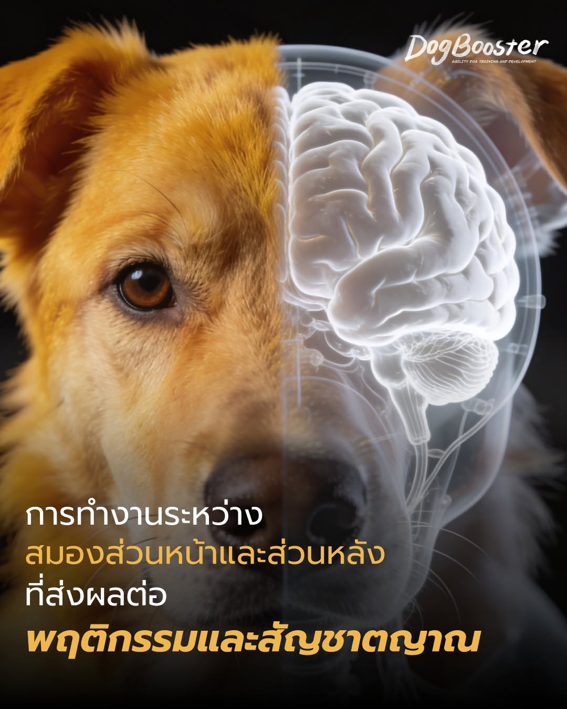

เคยสงสัยไหมคะ? ทำไมน้องหมาถึงจมูกไวเบอร์นั้น หรือทำไมบางทีเขาก็ทำอะไรไปตามสัญชาตญาณ จนเราเบรกไม่ทัน วันนี้มาไขความลับการทำงานของสมองเจ้าตูบกันค่ะ
โครงสร้างสมองของสุนัขแบ่งการทำงานหลัก ๆ ออกเป็น 2 ส่วน ที่ทำงานร่วมกันอย่างน่าทึ่ง:
ส่วนนี้คือส่วนที่ทำให้สุนัขแต่ละตัวมี “บุคลิก” และ “การเรียนรู้” ที่ต่างกัน
เป็นส่วนที่ใหญ่มาก! ทำหน้าที่ประมวลผลกลิ่นโดยเฉพาะ สุนัขไม่ได้ “มอง” โลกด้วยตาอย่างเดียว แต่ใช้กลิ่นในการสร้างภาพจำ
ส่วนที่ใช้ในการเรียนรู้คำสั่ง (นั่ง, หมอบ, คอย) การแก้ปัญหา และการตัดสินใจ เวลาเราฝึกเขา สมองส่วนนี้จะทำงานหนักที่สุด
ส่วนนี้เป็นรากฐานของชีวิตและสัญชาตญาณดิบที่สืบทอดมาจากบรรพบุรุษ
คุมการทรงตัวและการเคลื่อนไหวที่คล่องแคล่ว
ดูแลระบบพื้นฐานที่ขาดไม่ได้ เช่น การหายใจ การเต้นของหัวใจ และการย่อยอาหาร
บางอย่างน้องหมาทำไปโดยไม่ต้องสอน เพราะมันถูกฝังอยู่ในดีเอ็นเอ
Prey Drive: สัญชาตญาณนักล่า เริ่มตั้งแต่ จ้อง → ไล่ → กัด
Resource Guarding: การหวงของ (อาหาร/ที่พัก) เพื่อความอยู่รอด
Social Instinct: การสื่อสารด้วยภาษากายเพื่อลดความขัดแย้ง
Reflexes: การตอบโต้อัตโนมัติ เช่น การสะดุ้งเมื่อได้ยินเสียงดัง
DogBooster เราเชื่อว่าการฝึกที่ดีที่สุดไม่ใช่แค่การออกคำสั่ง แต่คือการขัดเกลาพฤติกรรมให้ฝังลึกถึงระดับสมอง เราฝึกให้น้องหมาทำจนเป็น สัญชาตญาณใหม่ เพื่อให้เขาตัดสินใจทำในสิ่งที่ถูกต้องได้เอง โดยที่คุณไม่ต้องคอยดุหรือคอยห้ามตลอดไป 🐾✨
สอบถาม / เริ่มฝึกกับ DogBooster